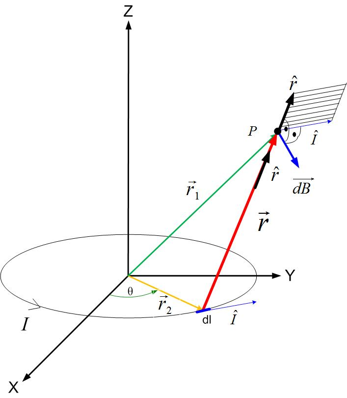
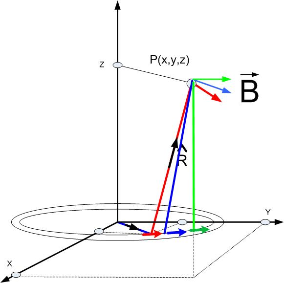

We will first find the magnetic field due to a loop carrying current , positioned in the X-Y plane, as shown in Figure fig:magfield. To solve this problem, we will first divide the loop into small pieces and label one of these pieces as . The magnetic field due to an infinitesimal current, can be found using Biot-Savart’s law. Magnetic field is labeled in Figure fig:magfield as . The infinitesimal current position is defined by a position vector . The position of point P, where the field will be calculated, is defined with the position vector . The distance between the current and the observation point is labeled as . The vector is defined in Equation bscur.

The total magnetic field at a point P is then equal to the sum of all the fields due to the elemental currents, as shown in Figure bscur1. The equation for the total field is given in eqtotfieldringm.

The problem now is to represent all the variables in the Equation bscur ( , , and ) using appropriate coordinate system and given current distribution. As seen in Figure fig:magfield, is an arc length in the direction of theta (blue arrow next to ) , where is the radius of the loop. The vector is the position vector of the arc length , and the vector is the position vector of the point P where we want the find the magnetic field. Point P is an arbitrary point in the Cartesian coordinate system, P(x,y,z), therefore its vector is shown in Equationeq1loopm. The vector is the distance vector between the elemental current (the source) and the point at which we are calculating the electric field.
The vector can be written in Polar Coordinates as in Equation pcvecm,where is the radius of the loop. The equation pcvecm can be rewritten in Cartesian coordinate system as in Equation csloopvecm.
The two vectors mark the beginning and the end of the distance vector . The vector is the sum of vectors and .
Therefore the vector’s magnitude and the unit vector are shown in Equations vecrloop1m-vecrloop2m.
Vector has the magnitude of:
Unit vector in the direction of vector is:
Cross product between the distance vector and the vector of the direction of current is found in Equations eq:cprloop-eq:product.
Replacing other variables in the Equations eq1loopm-vecrloop2m, we get the Equation eq:totalfieldloop1m for the magnetic field at a point P.
Components of the magnetic field are given in Equations eq:totalfieldloop1m-eq:totalfieldloop3m.
Each field component can be integrated separately, as shown in Equations totalfieldloop4m-totalfieldloop6m.
The magnetic field above is shown in Figure mflmat
To visualize scalar fields in Matlab, we can use the following functions: slice, contourslice, patch, isonormals, camlight, and lightning. Please note that a more detailed explanation about these functions can be found in Matlab help.
Slice is a command that shows the magnitude of a scalar field on a plane that slices the volume where the potential field is visualized. The format of this command is as shown below.
slice(x,y,z,v,xslice,yslice,zslice)
Where X, Y, and Z are coordinates of points where the scalar function is calculated, V is v the scalar function at those points, and the last three vectors xslice, yslice, and zslice are showing where will the volume will be sliced.
An example of a slice command is given below. There is an additional command colormap that colors the volume with a specific palette in the example below. To see more about different color maps, see Matlab help. xslice has three points at which the x-axis will be slice. They are -1.2, .8, 2. The volume will be sliced with a plane perpendicular to the x-axis, and it crosses the x-axis at points -1.2, .8, and 2.
clc
clear all
[x,y,z] = meshgrid(-2:.2:2,-2:.25:2,-2:.16:2);
v = x.*exp(-x.^2-y.^2-z.^2);
xslice = [-1.2,.8,2]; yslice = 1; zslice = [-2,0];
slice(x,y,z,v,xslice,yslice,zslice)
colormap hsv
Contourslice command will display equipotential lines on a plane being the volume where the potential field is visualized. An example of contourslice function is shown below.
[x,y,z] = meshgrid(-2:.2:2,-2:.25:2,-2:.16:2);
v = x.*exp(-x.^2-y.^2-z.^2); % Create volume data
[xi,yi,zi] = sphere; % Plane to contour
contourslice(x,y,z,v,xi,yi,zi)
view(3)
Patch command creates a patch of color.
Command isonormals creates equipotential surfaces.
camlight(’headlight’) creates a light at the camera
position.camlight(’right’) creates a light
right and up from camera.
camlight(’left’) creates a light
left and up from camera.camlight with no arguments is the
same as camlight(’right’).
camlight(az,el) creates a light
at the specified azimuth (az) and elevation (el)
with respect to the camera position. The camera target
is the center of rotation
and az and el are in degrees.
lighting flat selects flat lighting.
Lighting gouraud selects gouraud lighting.
Lighting phong selects phong lighting.
Lighting none turns off lighting.